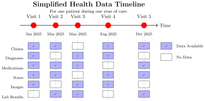
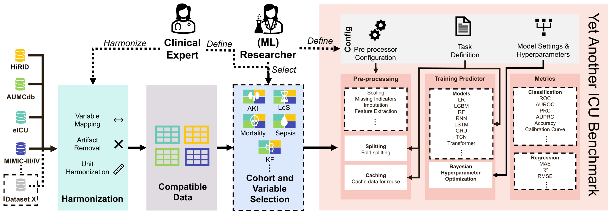
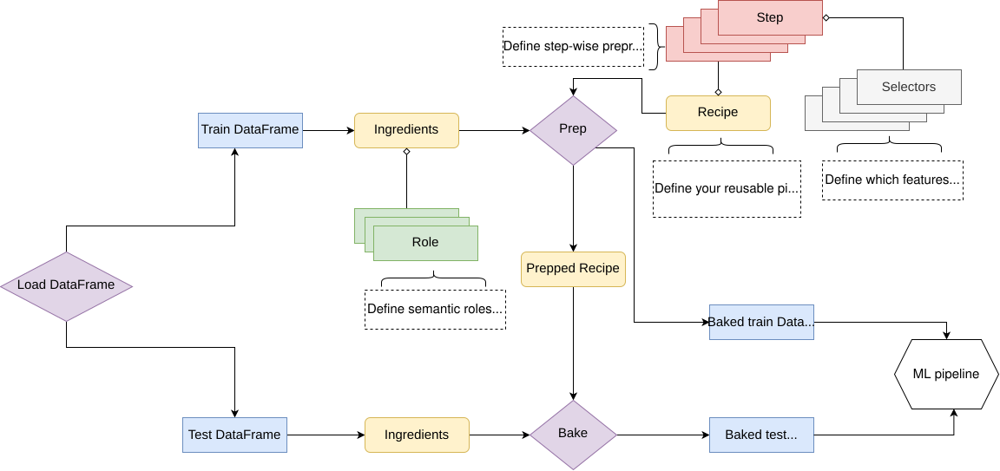

Building Modular Multimodal Machine Learning Infrastructure for Healthcare at Scale
13 February 2026

Thesis Statement: Healthcare ML requires rich data, reusable model components, and an extensive validation ecosystem.
The problem statement motivating this work1
“Despite significant advances in machine learning capabilities, few AI systems have been successfully deployed into clinical practice. Key barriers include reproducibility challenges, generalization failures, and lack of standardized evaluation frameworks.”
Research question: Why do different papers report different performance for the same clinical task?
Problem: Comparing across papers is nearly impossible because:
Example: ICU mortality prediction on MIMIC-IV - Published models range from AUROC 0.70 to 0.95 - Is this variation due to models or experimental setup?
Hypothesis: Dataset, cohort definition, and preprocessing choices have larger effects on performance than the choice of model architecture.
Design Philosophy: Build a framework that enables reproducible comparisons while remaining flexible
Key Features:
ricu)

Model Comparison (Vanilla Task):
| Model | AUROC |
|---|---|
| Logistic Regression | 0.75 |
| Random Forest | 0.76 |
| Gradient Boosting | 0.78 |
| RNN | 0.79 |
| LSTM | 0.80 |
Effect: 0.05 AUROC range
Cohort Definition Impact (MIMIC-IV Sepsis):
| Definition | AUROC | N Cases |
|---|---|---|
| Sepsis-2 | 0.82 | 15,420 |
| Sepsis-3 | 0.91 | 3,730 |
| Local variant | 0.76 | 8,000 |
Effect: 0.15 AUROC range Joh16?
Conclusion: Preprocessing and cohort definition typically dwarf model architecture effects [Van24a?; Fig 3.6].
Experiment: Train on one dataset, evaluate on others (zero-shot transfer)
MIMIC-IV → HiRID : AUROC 0.78 → 0.65 (-0.13)
eICU → MIMIC-IV : AUROC 0.81 → 0.69 (-0.12)
HiRID → AUMCdb : AUROC 0.80 → 0.61 (-0.19)Implication: Without careful harmonization and understanding of dataset-specific factors, trained models fail dramatically on new data [Van24a?; Table 3.6, 3.7].
Why? Different hospitals → different recording practices, measurement frequencies, patient populations, coding systems.
Rather than force all researchers into one rigid pipeline (which is unrealistic), YAIB provides:
Philosophy: “True comparisons are rare; instead, ensure transparency.” Van24a?
Software Ecosystem Developed:
Lessons Learned: - External validation is critical and often reveals dataset shifts - Documentation and version control matter more than model sophistication - The community needs standardized baselines to compare against
Open Question: Why do prediction models trained on retrospective ICU data fail to alert for complications occurring in the general ward?
Reality Check: ICU prediction models assume: - ✓ High-frequency monitoring (vital signs every 1-5 minutes) - ✓ Immediate intervention capability - ✓ Homogeneous patient population
But in the general ward (GW): - ✗ Sporadic vital sign measurements (every 4-8 hours or less) - ✗ Lower acuity → delayed detection → higher complication rates - ✗ Heterogeneous surgical/medical mix - ✗ Different staffing patterns and resources
Clinical Challenge: ~50% of postoperative complications occur after ICU discharge on the general ward ALOTT15?.
Three-Phase Approach:
Phase 1: Retrospective Analysis Win24?; Rie25? - 7,711 patients from 2 centers - Machine learning vs. conventional scores (ASA, revised Charlson) - Find: ML models outperform traditional risk scores (AUROC 0.89 vs 0.72)
Phase 2: Prospective Data Collection van25d? - 520 surgical patients - Visceral surgery (pancreatic, liver, colorectal resections) - High complication rate (relevant surgical site infections, bile leaks, hematomas)
Phase 3: Hybrid Monitoring System van25d? - Wearable continuous vital sign devices in general ward - Integration of ICU monitoring + general ward wearables - Prospective validation of early warning system
Modalities Collected:
Traditional: - Demographic data - Preoperative labs - Operative details - ICU parameters
Clinical notes: - Assessed via NLP embeddings pan25b? - Medications analyzed for patterns
Wearable (Novel): - ECG (electrocardiogram) - PPG (photoplethysmography) - Temperature - Respiration rate - Heart rate variability
Data Rate: - ICU: ~1 measurement per patient per variable per hour - Wearables: ~100 measurements per variable per hour
Challenge: Fusing extremely heterogeneous data at different frequencies and granularities van25d?.
Segmentation and Aggregation Strategy:
Raw Wearable Streams
↓
[Artifact Detection] (outliers, motion artifacts)
↓
[Temporal Segmentation] (6-hour, 12-hour, 24-hour windows)
↓
[Feature Engineering]
├─ Statistical (mean, std, quantiles)
├─ Temporal (trends, autocorrelation, entropy)
└─ Spectral (FFT components for heart rate variability)
↓
[Multi-Modal Fusion]
├─ Early fusion (feature-level concatenation)
├─ Late fusion (model-level ensembles)
└─ Hybrid approaches
↓
Prediction Models (XGBoost, RNN, Transformers)Best Architecture for Complication Prediction:
Clinical Data Clinical Notes Wearable Time Series
↓ ↓ ↓
[Dense] [BERT Embeddings] [Temporal Conv/LSTM]
↓ ↓ ↓
[32 units] [768-dim embedding] [Attention Layer]
↓ ↓ ↓
└─────────────────────────┬───────────────────────┘
↓
[Attention Fusion]
↓
[Dense Layer]
↓
[Sigmoid Output]
(Complication Risk)Architecture Rationale: - Different modalities have different temporal characteristics - Wearables contribute high-frequency predictive signal - Clinical notes capture semantic context
Surgical Site Infection (SSI-III) Prediction:
| Modality | AUROC | AUPRC | Sensitivity @ 90% Spec |
|---|---|---|---|
| Preoperative only | 0.72 | 0.18 | 0.35 |
| + ICU data | 0.81 | 0.28 | 0.62 |
| + Wearables (GW) | 0.86 | 0.38 | 0.75 |
Learning Curve: Adding wearable data improves AUPRC by ~36% [van25d?; Fig 4.14].
Validated Findings for SSI-III:
Significant features (SHAP analysis): 1. Heart rate variability - Reduced in pre-complication period 2. Respiratory rate volatility - Increased instability 3-5 days before diagnosis 3. PPG amplitude decline - Suggests deteriorating perfusion 4. Medication interactions - Antibiotic timing combined with vital sign changes
Clinical Interpretation: The wearables capture physiological deterioration that manifests before clinical diagnosis because nurses don’t continuously monitor general ward patients [van25d?; Fig 4.15, 4.16].
Clinical Implementation: Threshold Setting
Risk categories: - Green (< 0.30): Routine care - Yellow (0.30–0.60): Increased monitoring - Red (> 0.60): Urgent clinical review
Validation: 52 prospective patients with complications - Alarm triggered an average of 3.2 days before clinical diagnosis - Median lead time: 2.1 days (IQR: 1.2–4.5)
Clinical Impact Potential: - Early intervention window for complications (bile leaks, hematomas) - Potential to prevent progression from minor to severe complications - But: Requires clinical staff to act on alerts (workflow integration)
Lesson Learned: Prospective studies reveal what retrospective studies miss
| Aspect | Retrospective | Prospective |
|---|---|---|
| Data quality | Pre-existing, variable | Controlled, standardized |
| Timing | Fixed (events already occurred) | Real-time (can intervene) |
| Causal inference | Confounded | Can design for causality |
| Clinical relevance | Varies by hospital | Context-specific |
| Generalization | Hard to assess | Direct validation possible |
Result: Our prospective CASSANDRA study found that hybrid monitoring (ICU + GW wearables) is essential for early detection van25d?.
Open Question: How can we enable reproducible ML research across healthcare systems without requiring every institution to rebuild the entire pipeline?
Problem Statement:
The ML4H community reinvents the wheel continuously:
Example: Mount Sinai Health System (MSHS) has 6.8 million patients - Before MEDS: Data in OMOP format; every research project wrote custom extraction code (~3-6 weeks per project) - After MEDS: Standardized ETL pipeline; research ready in days
Vision: Build infrastructure so researchers focus on science, not data engineering.
Design Principles:
Core Schema (v0.4.0):
{
"patient_id": "12345",
"events": [
{
"time": "2023-01-15T08:30:00Z",
"code": "ICD10/E11", # Diabetes diagnosis
"numerical_value": null,
"text_value": null
},
{
"time": "2023-01-15T09:00:00Z",
"code": "LOINC/2345-7", # Glucose measurement
"numerical_value": 156,
"text_value": null,
"unit": "mg/dL"
}
]
}Advantage: Single standard enables tool reuse across institutions Gro24?.
Supported Datasets & ETLs [McD25c?; Table 1.1]:
Public Datasets: - MIMIC-IV (73K admits) - eICU (201K admits) - HiRID (34K admits) - AUMCdb (23K admits) - INSPIRE (130K admits) - SICdb (27K admits)
Healthcare Systems: - MSHS (6.8M patients) - CUMC (NYP system) - Northwestern (NWICU) - Stanford Medicine - Others (8+ countries)
Status: 15+ institutions, 7 open-source tools, 10+ published models McD25c?
Ecosystem Tools:
Problem: Researchers don’t understand the data they work with
Solution: Interactive web-based data exploration tool
Features: - Histogram of measurement frequencies - Unique code counts per patient - Subject timeline visualization - Code search and filtering - Vocabulary distribution analysis
Real-World Impact (MSHS dataset): - Median patient has 1,240 unique codes - 1% of codes represent ~80% of events (heavy-tailed distribution) - Discovered data quality issues (e.g., erroneous dates) before modeling
Challenge: Different hospitals use different coding systems
Solution: LLM-powered code normalization
Input: "pt has DM type 2, using metformin"
↓
[GPT-4 Embedding + Semantic Search]
↓
Output: ICD10: E11.9, RxNorm: 6809Performance: 94% accuracy on validation set; enables retrospective harmonization across coding eras github-harmonizer?.
Motivation: Foundation models must generalize across institutions
Design: - Define standardized tasks (disease onset prediction) - Each site independently trains and evaluates on their own MEDS data - Results aggregated without sharing raw data (privacy-preserving)
First Benchmark McD24?:
Four EHR foundation models evaluated across 6 institutions:
| Model | AUROC (avg) | Sites |
|---|---|---|
| MOTOR Ste23? | 0.82 | 6 |
| CEHR-BERT Pan24? | 0.80 | 6 |
| BEHRT Li20? | 0.78 | 6 |
| Random baseline | 0.50 | 6 |
Key Finding: Model generalization varies by site; no single “best” model across all institutions.
Landscape of EHR-Specific FMs [Pan25a?; Table 5.2]:
| Model | Temporal Repr. | Pretraining | Year |
|---|---|---|---|
| BEHRT Li20? | Age embeddings | MLM | 2020 |
| CEHR-BERT Pan21? | Time2vec | MLM | 2021 |
| CLMBR Ste21? | RoPE | NTP | 2021 |
| MOTOR Ste23? | RoPE | TTE | 2023 |
| CEHR-XGPT Pan25b? | ATT | NTP + TD | 2025 |
Trends: - Shift from static to temporal representations (RoPE, ATT) - Move toward next-token prediction (NTP) over masked LM - Recent success with time-to-event objectives
Proof of Concept: Training on MSHS Dataset van25b?
Dataset: - 6.8 million patients - Tokenized to 39,000 most common medical codes - ~2 billion events total
Architecture: Transformer-based (MEDS-compatible) - Positional encoding: Rotary embeddings (RoPE) - Vocabulary: OMOP standardized concepts + custom codes - Training: Next-token prediction + time-to-event objectives
Preliminary Results (Linear Probing):
Task FM (MSHS) Baseline ΔAUROC
─────────────────────────────────────────────────────
Pneumonia onset 0.78 0.71 +0.07
Sepsis prediction 0.75 0.68 +0.07
AKI stage 2+ 0.73 0.65 +0.08
Mortality (30-day) 0.82 0.76 +0.06Implication: Foundation models trained on real-world healthcare data demonstrate promise, but generalization across sites remains challenging.
Before MEDS:
New Research Project
↓
[Data Access Request]
↓
[Custom ETL Code] (3-6 weeks)
↓
[Feature Engineering] (2-4 weeks)
↓
[Cohort Definition] (1-2 weeks)
↓
[Actual ML Work] (weeks to months)
Total: 2-4 months before first model trainingAfter MEDS:
New Research Project
↓
[Use Existing ETL] (days)
↓
[Task Definition] (1-2 days)
↓
[Model Training + Evaluation] (days)
Total: 1-2 weeks before publication-ready resultsAcceleration Factor: ~10-20x faster time to research insights van25a?.
Technical Limitations:
Privacy: - HIPAA, GDPR compliance in data collection - MEDS-DEV designed for decentralized evaluation (data stays local) - Wearable devices in CASSANDRA with explicit consent
Fairness: - Demographic representation in training cohorts varies by institution - Retrospective observational data contains historical biases in treatment decisions Raj22? - Foundation models may amplify existing inequities if not carefully validated
Transparency: - Published YAIB code enables reproducibility and scrutiny - CASSANDRA registered prospective study (reduces publication bias) - MEDS ecosystem enables open science practices
The Virtuous Cycle:
┌──────────────────────────────────────────────────────┐
│ │
│ YAIB (Reproducible Benchmarks) │
│ ├─ Demonstrates importance of cohort/preprocessing │
│ ├─ Provides baselines for model comparison │
│ └─ → Feeds into MEDS standardization │
│ │
│ CASSANDRA (Clinical Reality Check) │
│ ├─ Shows ICU models fail in general ward │
│ ├─ Demonstrates value of multimodal data │
│ ├─ Validates prospective designs │
│ └─ → Informs MEDS feature requirements │
│ │
│ MEDS (Scalable Infrastructure) │
│ ├─ Enables YAIB-like benchmarks across sites │
│ ├─ Makes prospective studies easier to conduct │
│ ├─ Supports foundation model training at scale │
│ └─ → Allows broader reproducibility validation │
│ │
└──────────────────────────────────────────────────────┘Immediate Priorities (1-2 years):
Longer-Term Vision (3-5 years):
Q1: “Why should we trust your models given the CASSANDRA small sample size (N=520)?”
Answer: - Prospective design with pre-registered endpoints reduces bias - External validation planned with 3+ additional centers - Wearable early warning windows (2-3 days) leave margin for error - Conservative thresholds in implementation (yellow/red alerts)
Q2: “MEDS requires ETL pipelines at every hospital. Isn’t this a significant barrier?”
Answer: - True, but initial investment (~2-4 weeks per hospital) vs. continuous ~3-6 week overhead per project - MEDS working group has already built pipelines for 8+ major datasets - Open-source tools reduce burden (don’t need to build from scratch) - ROI becomes positive after 3-4 projects per hospital
Q3: “Foundation models require massive datasets. Can smaller hospitals participate?”
Answer: - Linear probing approach (freeze FM, train simple classifier) needs 100s of samples, not millions - Transfer learning from large public datasets (MIMIC, eICU) to small hospital domain - MEDS-DEV decentralized framework allows small hospitals to contribute validation data - Federated learning enables collaborative training without centralized data
Q4: “How do you validate that wearable-derived warnings actually prevent complications?”
Answer: - Prospective study design (CASSANDRA Phase 2) with real interventions - Currently in expansion phase at 3 additional centers - Randomized controlled trial design under discussion - Interim analysis shows lead times of 2-3 days feasible for clinical intervention window
Q5: “Reproducibility across datasets is hard. How do you know YAIB actually solves this?”
Answer: - YAIB enables apples-to-apples comparisons when used identically - Doesn’t solve all generalization problems, but makes them transparent - Cohort definitions are explicitly versioned and reproducible - Transfer learning experiments show expected performance drops when data shifts (validates framework)
Main Contributions:
Building on Community Work: - Temporal representations in EHR Ste23?; Pan24?; Pan25a? - Foundation models Bom21?; Dev19?; Khan25? - Challenges in healthcare ML Kelly19?; Adi25?; Sem25?
For Researchers:
For Institutions:
For Funding Bodies:
Central Argument:
The translation gap in ML4H cannot be solved by better algorithms alone. We require:
Why This Matters: - Healthcare data is precious and rare → must be used efficiently - Clinical decisions affect patient outcomes → must be validated rigorously - Healthcare systems are diverse → standardization enables but doesn’t ignore local variation
The Thesis Summarized: Healthcare ML requires not just better models, but better infrastructure, validation practices, and institutional commitment to reproducibility.
Looking Forward:
The field of machine learning for healthcare stands at an inflection point. We have: - ✓ Demonstrated predictive capability (models work in controlled settings) - ✓ Shown deployment is feasible (CASSANDRA, clinical partnerships) - ✓ Built standardized infrastructure (MEDS ecosystem)
What Remains: - Translating research into routine clinical practice (workflow integration) - Ensuring equitable deployment across diverse healthcare systems - Maintaining humility about what ML can and cannot do in healthcare
Personal Reflection:
This dissertation was driven by a simple observation: the best algorithm is worth nothing if it cannot be reproduced, validated, and deployed.
By focusing on reproducibility, clinical proof, and scalable infrastructure, we create conditions for healthcare ML to benefit patients, not just demonstrate technical capability.
Questions?
Key Takeaways: 1. Reproducibility framework (YAIB) reveals that experimental setup often matters more than model choice 2. Prospective validation (CASSANDRA) shows what works in reality, not just in retrospective analysis 3. Standardized data format (MEDS) enables community collaboration and faster scientific progress
Broader Vision: Healthcare ML can improve outcomes when built on solid infrastructure, rigorous validation, and commitment to reproducibility.
PhD Defense | Robin P. van de Water